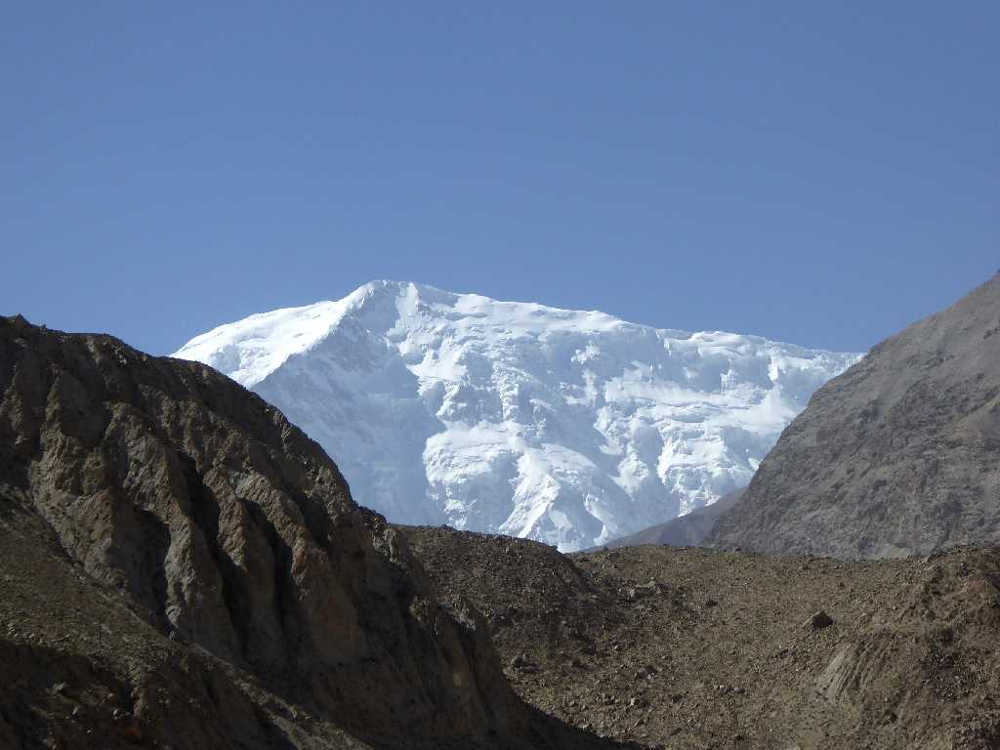
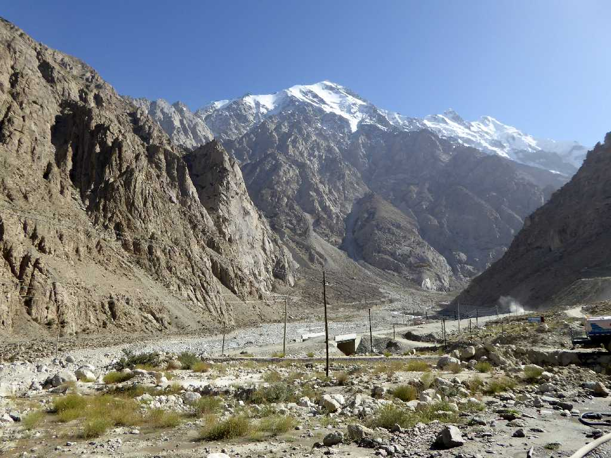
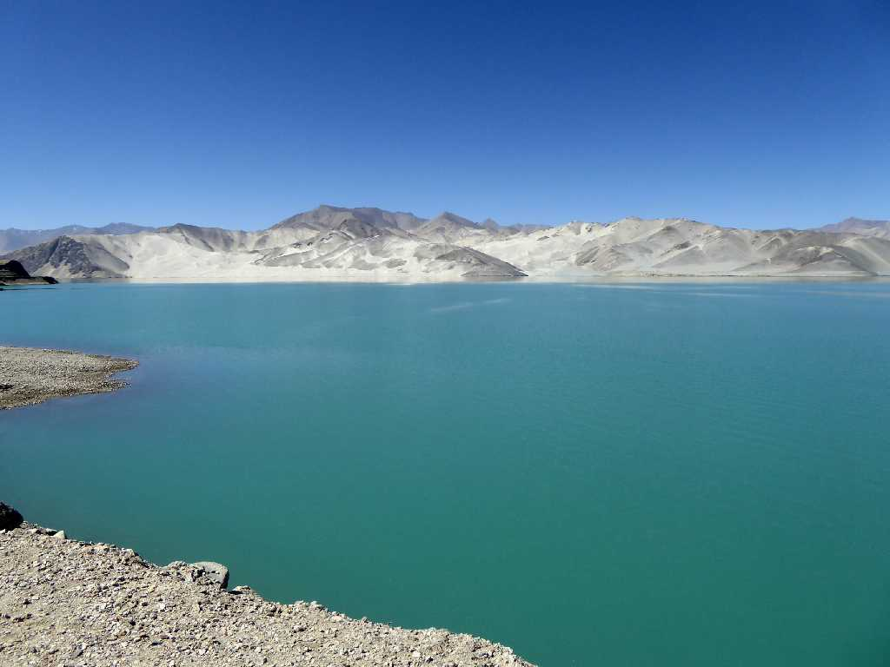
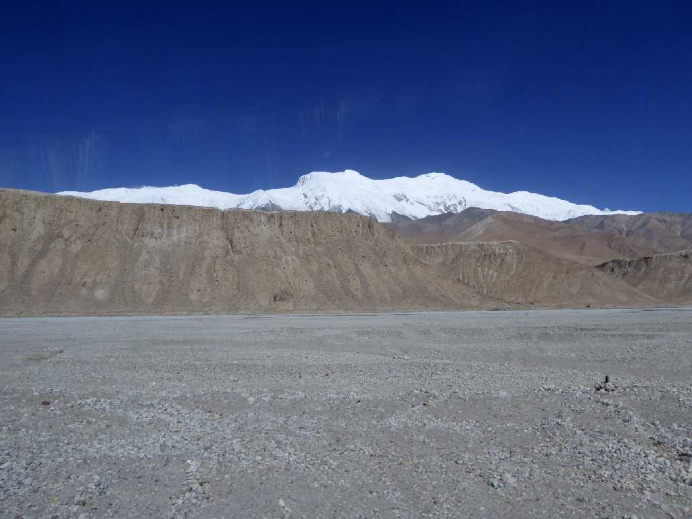
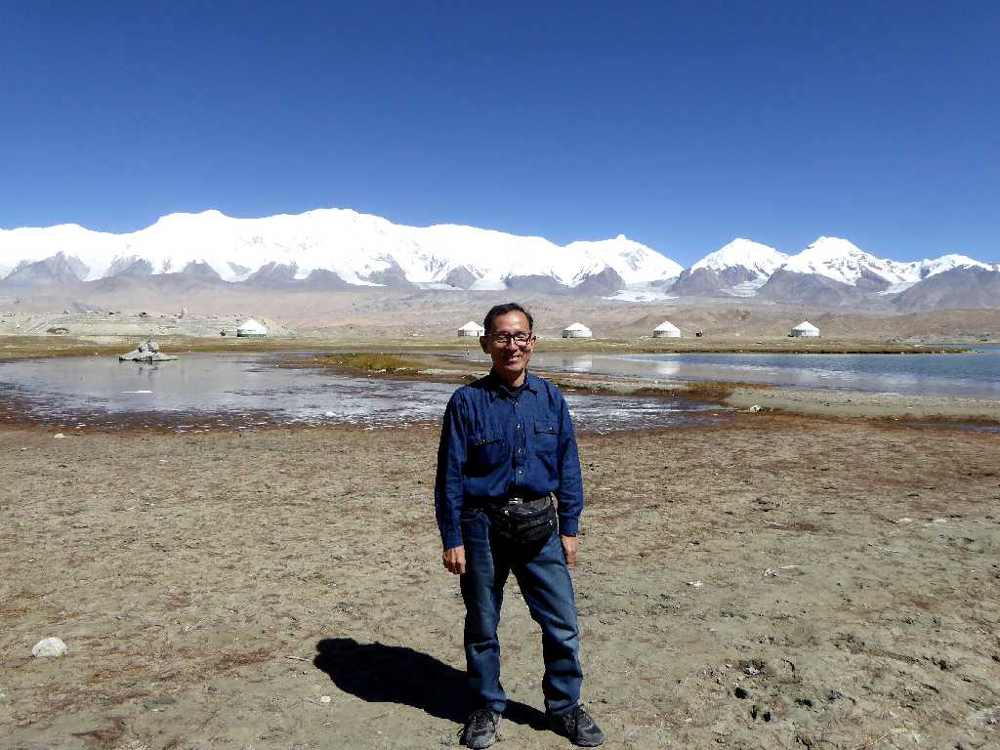

7,719m Kongur Tagh Gez Valley Karakoram Highway Kyrgyz Xinjiang
新疆 吉爾吉斯 喀喇昆仑公路 盖孜河谷 公格尔峰
カラコルムハイウェイをカシュガルからカラクリ湖まで南下する

Gez Valley Karakoram Highway 喀喇昆仑公路 盖孜河谷

Lake Bulungkol Karakoram Highway 喀喇昆仑公路 白沙湖

7,719m Kongur Tagh Karakul Karakoram Highway 喀喇昆仑公路 喀拉庫勒 公格尔峰

September 21 2015 7,719m Kongur Tagh 3,600m Lake Karakul Karakoram Highway
喀喇昆仑公路 喀拉庫勒湖 公格尔峰